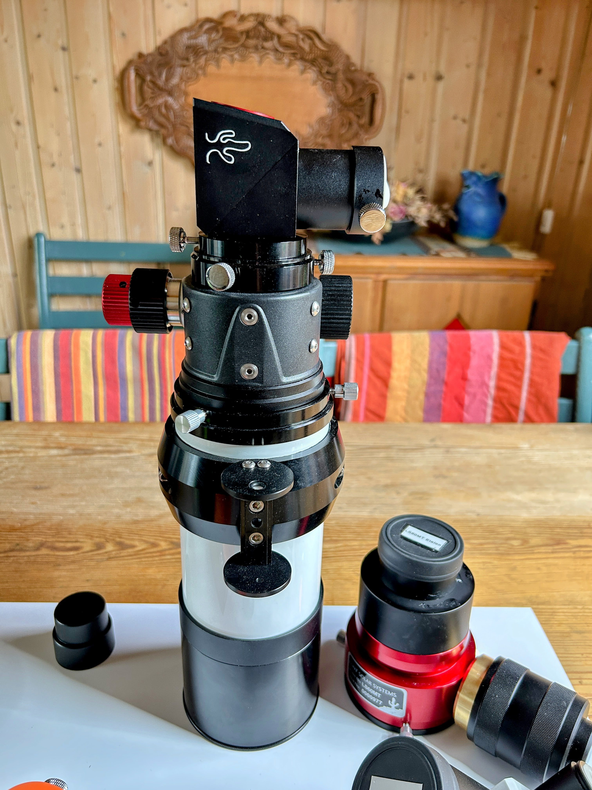

This is how the LS60MT look when ready for observing or imagine the sun in white light. Be sure to read the description below the picture.

LS60MT Ready For White Light Solar Observing / Imaging
Notice that the etalon filter module has been removed.
What makes it safe to observe the sun is the Lunt Herschel Diagonal. It is recognized by being black with the Lunt cactus logo and the orange plate warning about hot area.
If one look carefully one see that a 2 inch to 1.25 inch reducer is used to attach the diagonal to the focuser.
The Baader Single Polarising Filter should be used with the Pentax Zoom so not blended doing visual observing (it is not dangerous to not use the polarising filter but the light is to bright for comfortable observing).